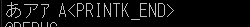

権利表示 / Component notices · MIT
実見した250x27のPRINTK出力クロップは、黒地の混在かな・A・PRINTK_ENDと端のDEBUG断片だけで、私的UI/パス/ゲーム本文がなく原バイト公開できる。
分類 / Decision · exact
本文は保存当時の記録です。元のパス・hash・seal・現在時点の記述は当時の状態を表します。 / The body is a historical record. Embedded paths, hashes, seals and statements about current status describe that retained record.
原本 / Original SHA-256 e8f1a42b00444ca19fd186377b82364ffc73215a123fbc1290da23fc989c8d1d
収録物 / Artifact SHA-256 e8f1a42b00444ca19fd186377b82364ffc73215a123fbc1290da23fc989c8d1d
